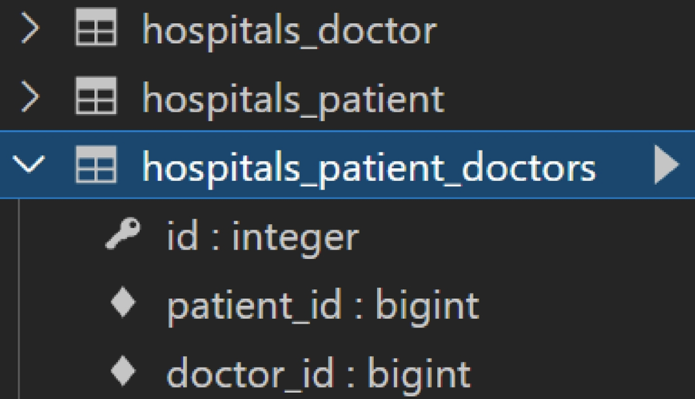

Model relationship 2
- 병원 진료 기록 시스템을 통한 M:N 관계 학습
1:N 의 한계
새로운 예약을 생성하는 것이 불가능
- 새로운 객체를 생성해야 함

여러 의사에게 진료 받은 기록을 환자 한 명에 저장할 수 없음
- 외래 키에 ‘1,2’ 형식의 데이터를 사용할 수 없음

1. 중개 모델


2. ManyToManyField
- 다대다 (M:N) 관계 설정 시 사용하는 모델 필드
- 하나의 필수 위치 인자(M:N 관계로 설정할 모델 클래스)가 필요

ManyToManyField 로 인해 생성된 중개 테이블 확인

3. Related_name
- Target model (관계 필드를 가지지 않은 모델)이 source model (관계 필드를 가진 모델)을 참조할 때 사용할 manager의 이름을 설정
- 즉, 역참조 시에 사용하는 manager 의 이름을 설정
- related_name 설정 후 기존의 _set manager는 더이상 사용할 수 없음!
- ForeignKey 의 related_name과 동일

중개 모델(테이블) in Django
- Django는 ManyToManyField를 통해 중개 테이블을 자동으로 생성
- 중개 테이블을 수동으로 지정하려는 경우
through옵션을 사용하여, 중개 테이블을 나타내는 Django 모델을 지정할 수 있음 - 가장 일반적인 용도는 중개 테이블에 추가 데이터를 사용해 다대다 관계로 연결하려는 경우에 사용
ManyToManyField
- 개념 및 특징
- 다대다 관계 설정 시 사용하는 모델 필드
- 하나의 필수 위치 인자(M:N 관계로 설정할 모델 클래스)가 필요
- 모델 필드의 RelatedManager를 사용하여 관련 개체를 추가, 제거 또는 만들 수 있음
- add(), remove(), create(), clear() …
related_name
- Target model (관계 필드를 가지지 않은 모델)이 source model (관계 필드를 가진 모델)을 참조할 때 사용할 manager의 이름을 설정
through
- 중개 테이블을 직접 작성하는 경우, through 옵션을 사용하여 중개 테이블을 나타내는 Django 모델을 지정할 수 있음
- 일반적으로 중개 테이블에 추가 데이터를 사용하는 다대다 관계와 연결하려는 경우에 주로 사용됨
중개 테이블의 필드 생성 규칙
- source model 및 target model 이 다른 경우
id<containing_model>_id<other_model>_id
- ManyToManyField가 동일한 모델을 가리키는 경우
idfrom_<model>_idto_<model>_id
symmetrical
ManyToMany가 동일한 모델(on self) 을 가리키는 정의에서만 사용
symmetrical=True(기본값)일 경우 Django는 person_set 매니저를 추가하지 않음
source 모델의 인스턴스가 target 모델의 인스턴스를 참조하면, target 모델 인스턴스도 source 모델 인스턴스를 자동으로 참조하도록 함
- 즉, 내가 당신의 친구라면, 당신도 내 친구가 되는 것
- 대칭을 원하지 않는 경우 False로 설정
- Follow 기능 구현에서 다시 확인

Like


QuerySet API = exists()
- QuerySet에 결과가 포함되어 있으면 True를 반환하고 그렇지 않으면 False를 반환
- 특히 규모가 큰 QuerySet 의 컨텍스트에서 특정 개체 존재 여부와 관련된 검색에 유용
- 고유한 필드(예: primary key) 가 있는 모델이 QuerySet의 구성원인지 여부를 찾는 가장 효율적인 방법